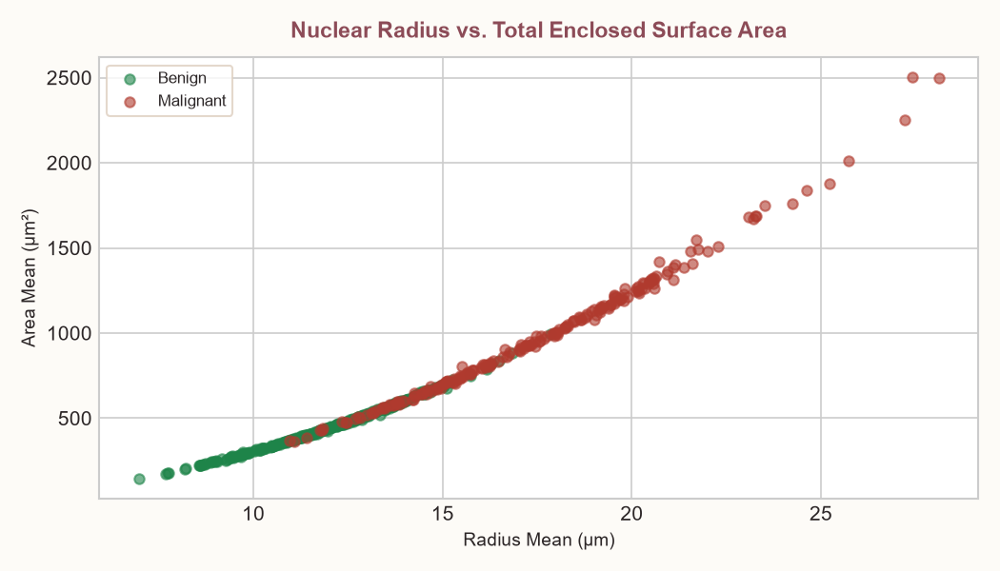
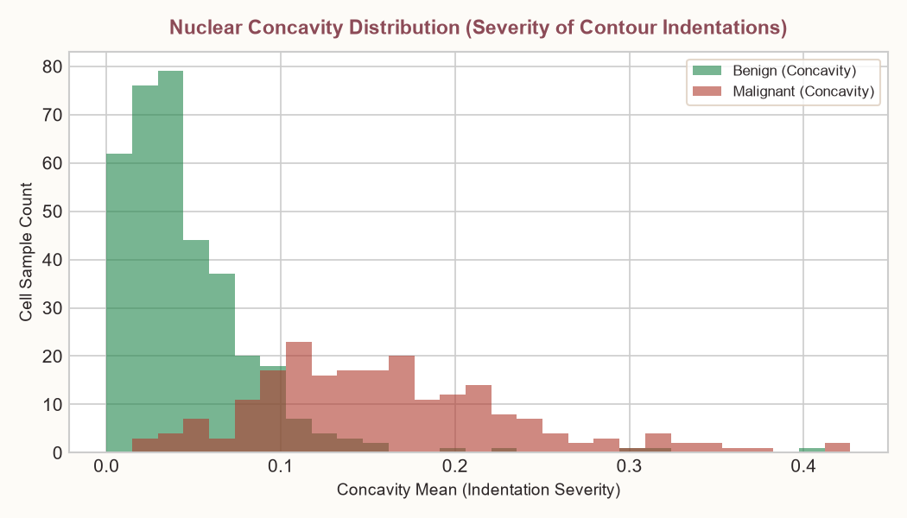
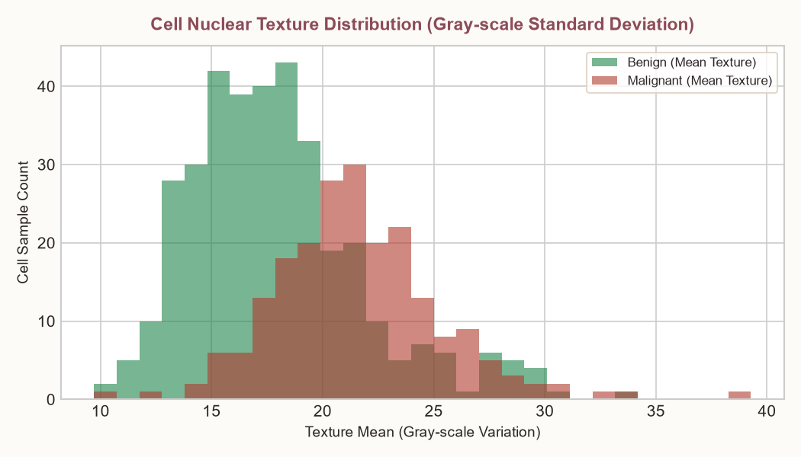
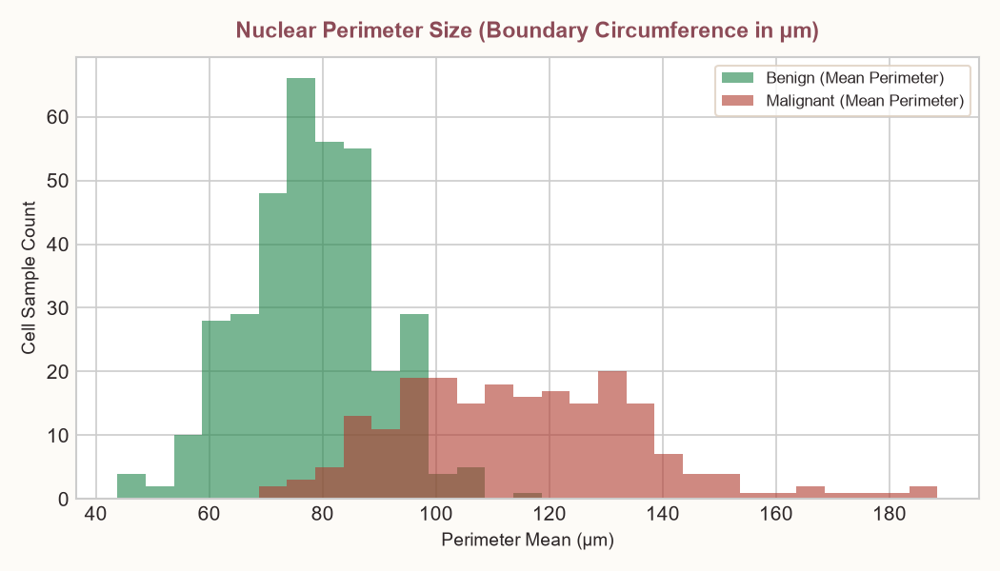
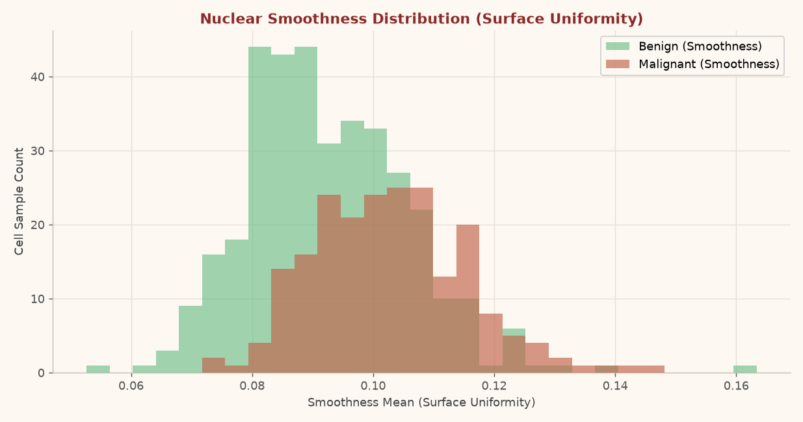
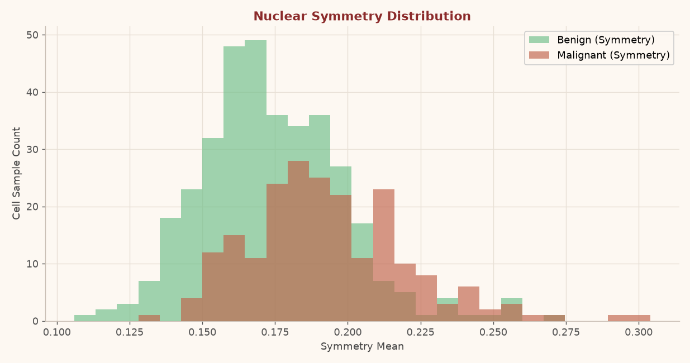
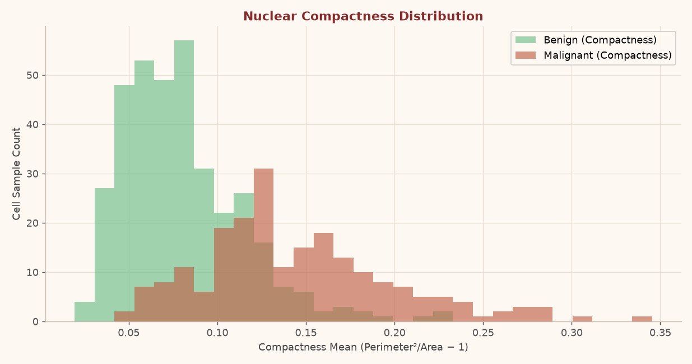
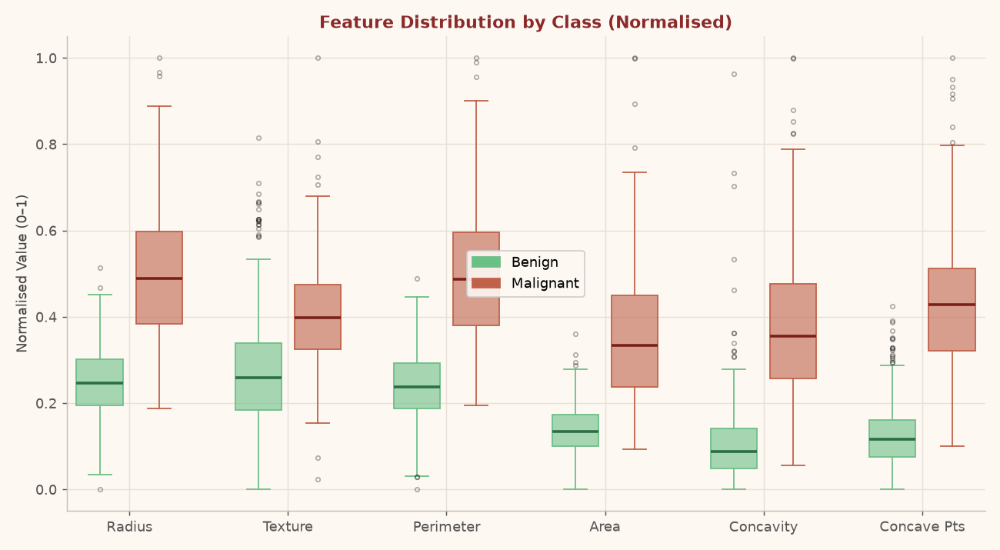
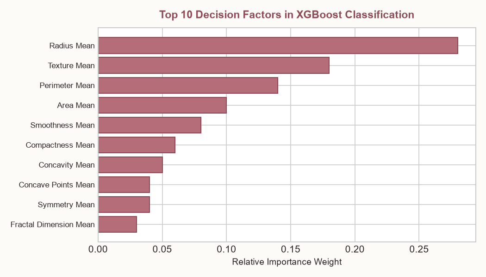

Benign
A benign tumour is non-cancerous. Its cells are normal in appearance, grow slowly, and do not invade nearby tissue or spread to other parts of the body. Benign tumours are typically removable and rarely return after treatment.
Malignant
A malignant tumour is cancerous. Its cells are abnormal, divide uncontrollably, and can invade surrounding tissue or metastasise through the bloodstream or lymph system to distant organs, requiring immediate clinical intervention.
Advanced Parameters ▾
Parameter Reference
Detailed definitions and clinical significance of each cell nucleus parameter.
Radius
Definition: Mean of distances from the center of the cell nucleus to points on its outer boundary.
Clinical Meaning: Larger nuclear radius often indicates abnormal cellular enlargement typical of malignant growth.
Texture
Definition: Standard deviation of gray-scale intensity values in the digital microscopic image of the cell nucleus.
Clinical Meaning: Irregular chromatin distribution causes higher texture variation in cancerous cell nuclei.
Perimeter
Definition: Total distance around the outer nuclear border measured along perimeter pixels.
Clinical Meaning: Irregularly shaped malignant nuclei have substantially larger perimeters than smooth benign nuclei.
Area
Definition: Total enclosed surface area contained within the cell nucleus boundary in square micrometers (μm²).
Clinical Meaning: Significantly increased nuclear surface area correlates directly with elevated mitotic activity in tumors.
Smoothness
Definition: Local variation in radius lengths comparing neighboring points along the nuclear boundary contour.
Clinical Meaning: Benign nuclei have smooth, uniform borders; malignant nuclei exhibit rough, jagged boundary variations.
Compactness
Definition: Ratio comparing the squared perimeter to the enclosed area, minus 1.0.
Clinical Meaning: Circular shapes yield lower compactness values (~0), whereas irregular or distorted shapes yield much higher values.
Concavity
Definition: Severity and depth of concave indentations along the perimeter of the nuclear contour.
Clinical Meaning: Deep indentations along the nuclear boundary are strong morphological indicators of malignancy.
Concave Points
Definition: Total number of distinct concave (inward-curving) sections along the nuclear boundary.
Clinical Meaning: Higher counts of concave points signal structural irregularity and higher risk of malignancy.
Symmetry
Definition: Degree of mirror symmetry measured along major and minor axes bisecting the cell nucleus.
Clinical Meaning: Asymmetric nuclear shapes are common in malignant cells due to uncoordinated growth patterns.
Fractal Dimension
Definition: Boundary complexity measured at multiple magnification scales using perimeter scale log-ratios.
Clinical Meaning: Complex, self-similar boundary micro-structures result in higher fractal dimension values.
Dataset Analysis
Distribution of cell-nucleus measurements across benign and malignant cases in the dataset.









Model Details & Performance
- Algorithm: XGBClassifier (Gradient Boosted Decision Trees) trained with optimized hyperparameters.
- Validation Strategy: 5-Fold Stratified K-Fold Cross-Validation.
- Objective: Binary classification (binary:logistic loss) evaluated on ROC-AUC.
- Class Balancing: Scale position weighting based on malignant/benign sample ratio.
=== Highest Metrics Across Folds === accuracy 0.991228 auc 1.000000 precision 1.000000 recall 1.000000 f1 0.988235 === Mean Metrics Across Folds === accuracy 0.978932 auc 0.994384 precision 0.980783 recall 0.962237 f1 0.970881